Moderator guide
How to add members, keep attendance polls up to date, take the register and look after rehearsals and concerts.
How to add members, keep attendance polls up to date, take the register and look after rehearsals and concerts.
1
Readererer is an attendance site for ensembles and orchestras. Members use it to say whether they are coming to each rehearsal and concert, and committee members use it to run the evening: who is coming, who is setting up, who is driving the van and who actually turned up.
This guide is for moderators. It walks through the jobs you will do most often, with a screenshot of each page. The red numbers in the screenshots, such as 1, match the numbers in the text beside them.
The screenshots were taken on a practice site filled with made-up ensembles and members, so the names, dates and numbers will not match yours.
Each site's admins choose its logo, colour and some of its wording (for example, what it calls a term or a rehearsal), and can turn features off. Setup groups, van drivers, sending a dep and having more than one ensemble are all optional. If your site does not use a feature, you will not see it, and you can skip that part of this guide.
Every account has a role. Moderators can do everything a member can, plus the jobs in this table. A few jobs need an Admin account; if you need one of those done, ask an admin.
| Job | Moderator | Admin |
|---|---|---|
| Add new members and edit their details | Yes | Yes |
| Add members to an ensemble or take them out | Yes | Yes |
| Archive members who have left | Yes | Yes |
| Change any member's replies on a poll, even after replies close | Yes | Yes |
| Take the register | Yes | Yes |
| See terms, dates, setup groups, van drivers and sent emails | Yes | Yes |
| Add or change terms and their dates | Yes | Yes |
| Archive a term | No | Yes |
| Send reminder emails by hand, or resend a failed email | No | Yes |
| Bring back an archived member | No | Yes |
| Set another member's password | No | Yes |
| Change ensembles, setup groups, seating plans and site settings | No | Yes |
| Role | Who it is for |
|---|---|
| Member | Players. They reply to their own ensembles' polls and keep their own details up to date. |
| Moderator | Committee members who look after members, polls and registers. |
| Admin | The people who set up terms, ensembles and the site itself. |
| Ensemble | A shared login for an ensemble, for example on a tablet at rehearsals. It can only fill in that ensemble's poll. |
| Guest | An account that can log in but see nothing until it is given another role. |
2
Open your Readererer site in any web browser, on a computer, tablet or phone. If you are not logged in, you will see the login page.
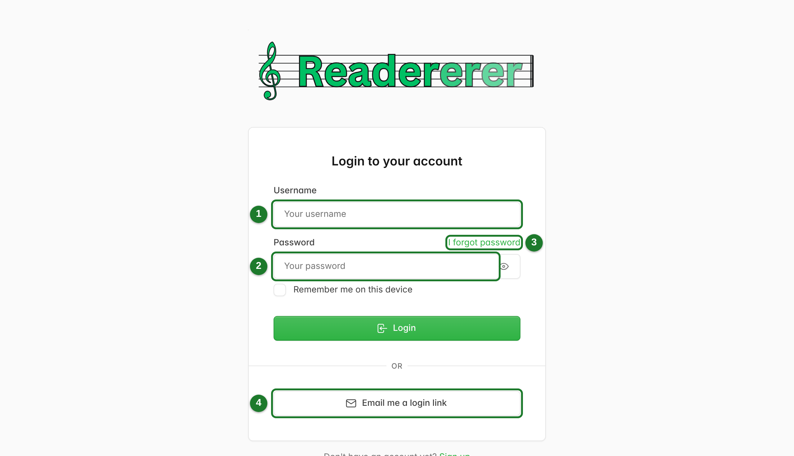
Both links go to the email address on your account. They work once and expire after a short time. If your site has Google login turned on, there is also a Login with Google button.
When you save changes to another member's details, the site asks you to type your password again and then saves your changes. You only need to do this once every three hours.
3
After you log in you land on the dashboard. It shows what is coming up for you, and the menu at the top takes you to everything else.
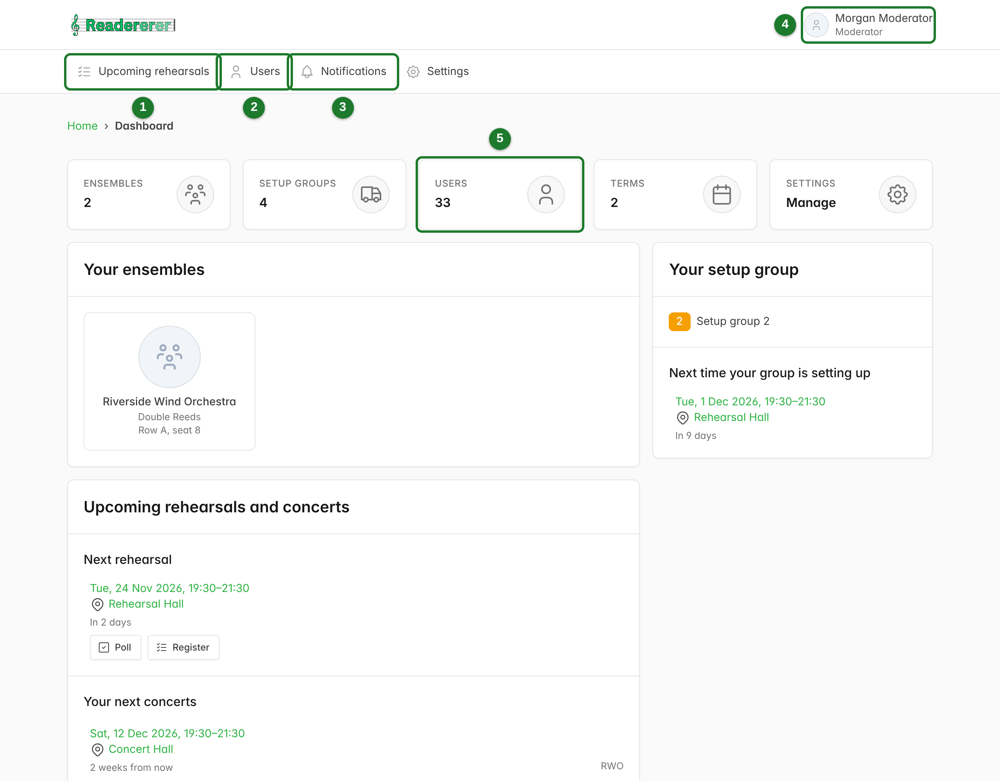
| What it is | |
|---|---|
| 1 | Upcoming rehearsals lists every date still to come, with buttons for its polls and registers. Most of your work starts here. |
| 2 | Users lists every member. Add, find and edit members here. |
| 3 | Notifications lists the emails the site has sent. |
| 4 | Your name opens your own menu: your profile, changing your password and logging out. |
| 5 | Summary cards count the ensembles, setup groups, users and terms. Click a card to open that list. |
Further down, the dashboard shows the ensembles you play in, your setup group's next turn, your next rehearsal and concerts (each with Poll and Register buttons), the latest poll replies and the latest emails.
The moon icon next to your name switches to dark colours. On a phone, the menu is folded away behind the menu button at the top right.
4
Adding a member takes two steps: create their account, then add them to the ensembles they play in. Until they are in an ensemble they will not appear on any poll or register.
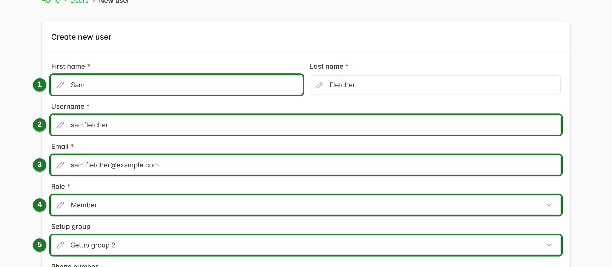
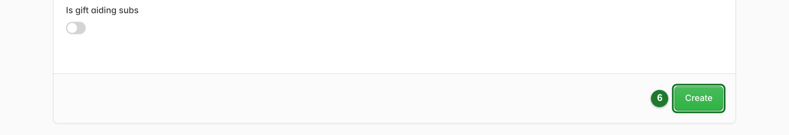
When the account is created, its page opens. The Ensembles card is empty, because the new member is not in an ensemble yet.
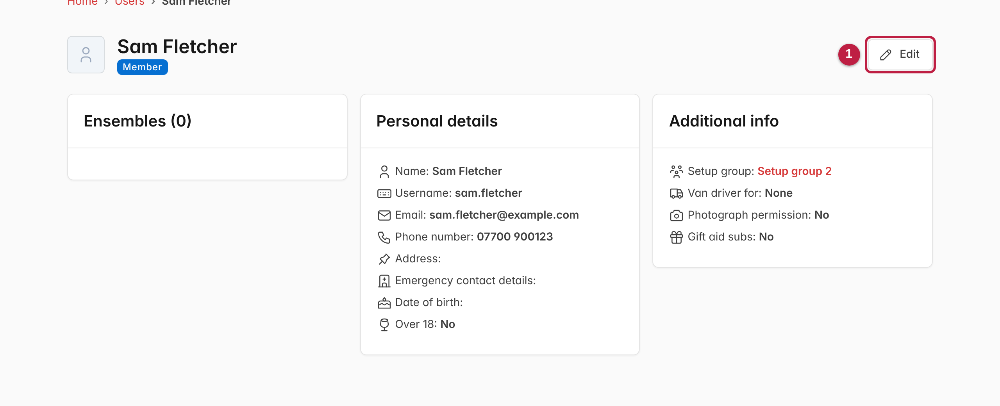
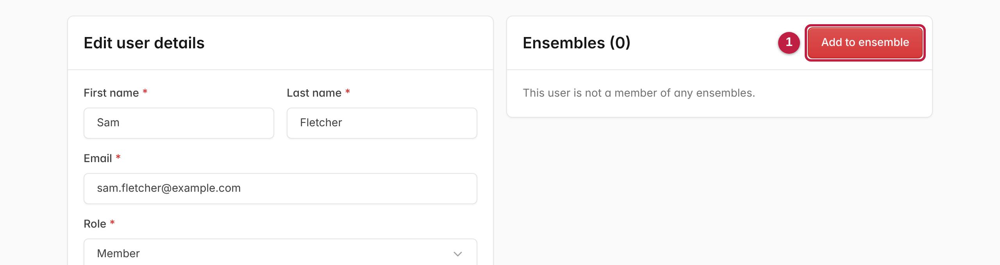
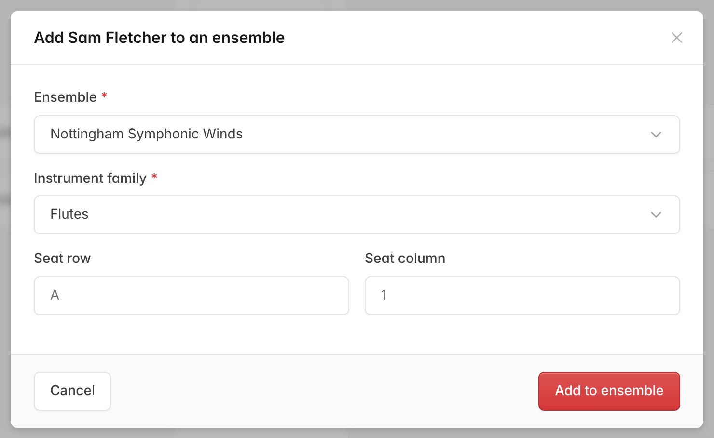
The site gives every new account a random password that nobody knows. Send the new member their username and ask them to open the login page and click Email me a login link (or I forgot password). The first time they log in, the site asks them to choose their own password.
5
Click Users in the menu. Click any column heading with arrows to sort by it, use All ensembles to show one ensemble's members, and use the page numbers at the bottom to see the rest. Click a member's name to open their page.
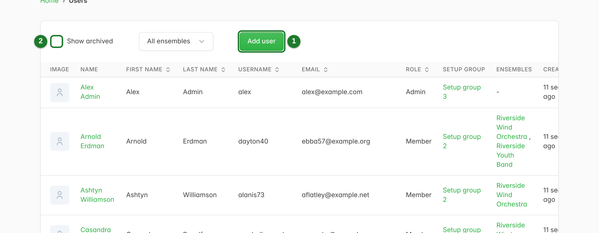
Members can update their own details too, from My profile in their own menu. They cannot change their own role, setup group or ensembles.
Members are never deleted outright: they are archived. An archived member disappears from the lists, polls and registers, but their past replies are kept.
To see archived members, tick Show archived 2. Only an admin can bring an archived member back, so check you have the right person first. Moderators cannot archive or edit admins.
6
Each ensemble has one poll per term: a grid with a row for every member and a column for every rehearsal and concert. Members fill in their own row. As a moderator you can change any reply, for example when a member tells you in person or by email.
Click Upcoming rehearsals in the menu. Each date has a Poll button for each ensemble 1 and a Register button for each ensemble 2. Clicking the date itself 3 opens that date's page. The list runs from the furthest date at the top to the next date at the bottom.
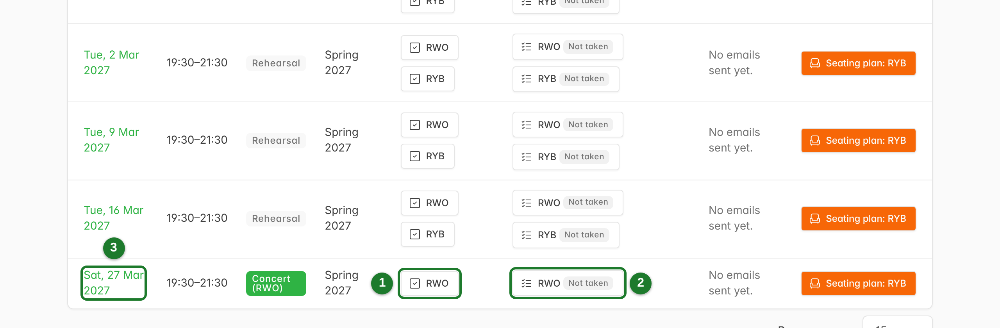
You can also open a poll from the Poll button under Next rehearsal on the dashboard.
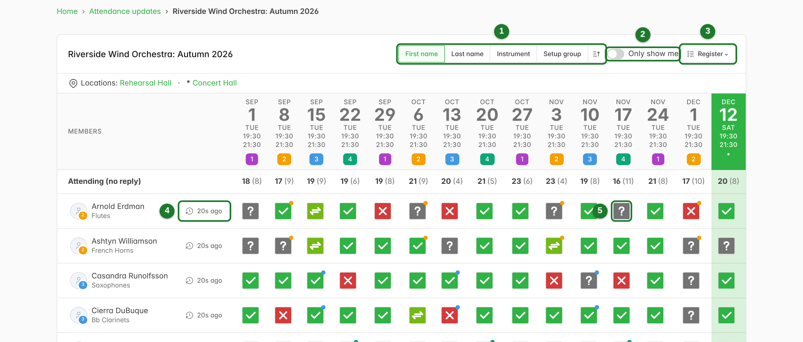
| What it does | |
|---|---|
| 1 | Sorts the members by first name, last name, instrument or setup group. The last button reverses the order. |
| 2 | Only show me hides everyone else, so you can fill in your own replies quickly. |
| 3 | Register jumps to the register for one of the term's dates. |
| 4 | When the member last changed a reply. Click it to see their full history. |
| 5 | A reply. Click it to change it, as described below. |
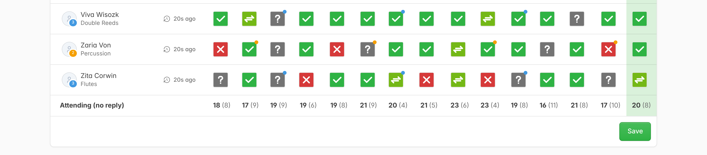
Members cannot change their replies once a date has started, and, depending on the site's settings, once that date's reminder emails have gone out. Their boxes are greyed out, and the poll tells them to ask an admin. Moderators can still change them, so members may come to you.
Click the time next to a member's name 4 to see every reply they have given this term, who made each change and when.
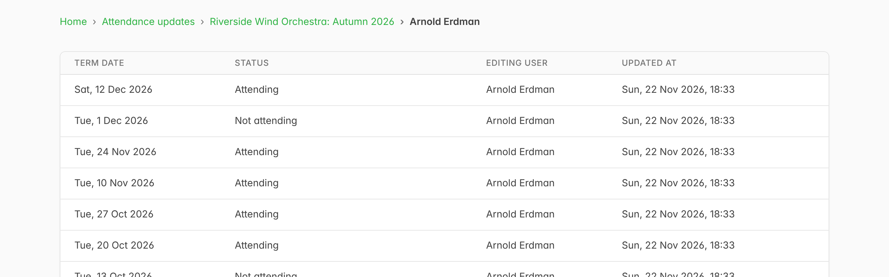
7
The poll records what members said they would do. The register records what actually happened on the day: who was there, who was late and who did not come.
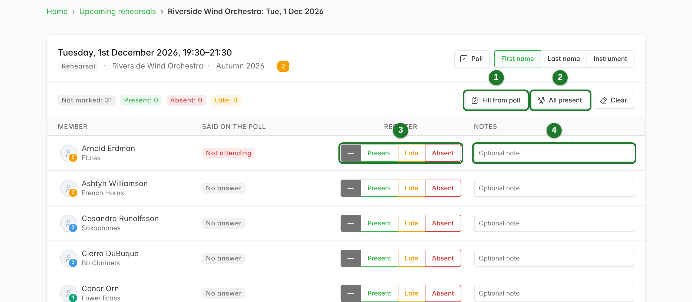
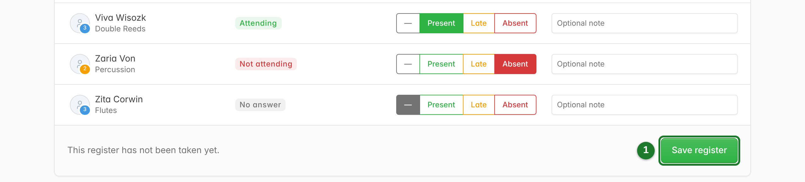
8
Click a date in Upcoming rehearsals, on the dashboard or on a term's page to open that date's page. It shows, for each ensemble playing, how many members are attending, not attending and have not replied, and each member's latest reply, with buttons for that ensemble's poll and register. On the right are the setup group on duty and the van driver.
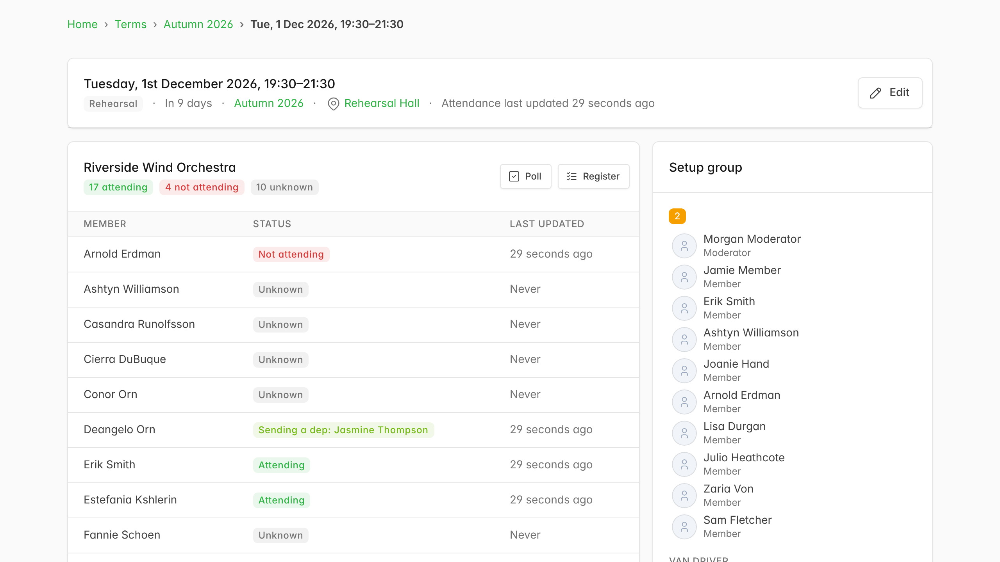
A rehearsal is for every ensemble. A concert is only for the ensembles playing in it, so only they see it on their polls and registers.
If your site uses them, members are split into setup groups that take turns to set up and pack away. Each group has a week number and a colour, which appear as the coloured numbers on polls and date pages. Each group also has a rota of van drivers: a date's van driver is the next driver on its group's rota, unless an admin has chosen someone else for that date.
Click the Setup groups card on the dashboard to see every group, its van drivers in rota order and its members.
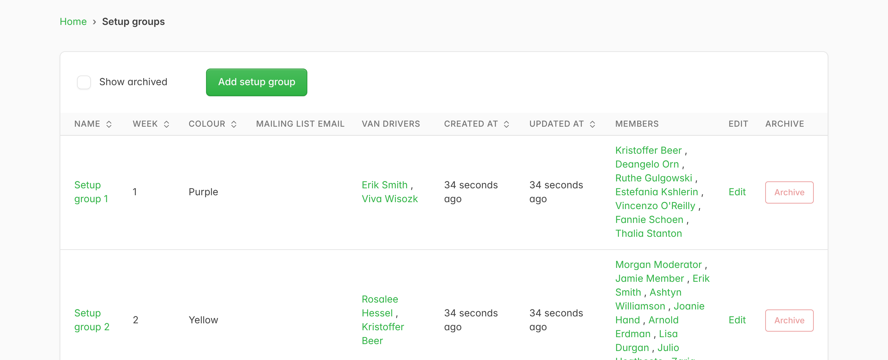
9
The site sends its emails automatically before each date: the attendance list, the setup reminder to the setup group on duty and the van-driver reminder. It also emails people when a setup group or van driver changes.
Click Notifications in the menu to see every email the site has sent, newest first: when it was sent, what type it was, which date it was about, whether it was sent and who it went to.
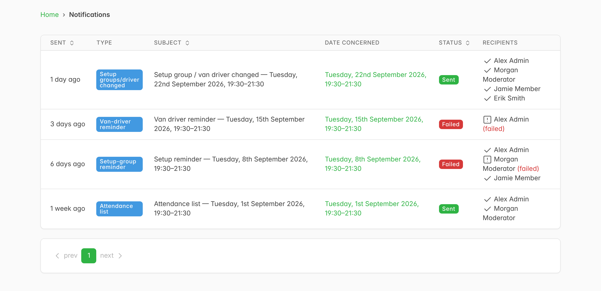
Only admins can resend a failed email or send a reminder by hand. Ask an admin once you have fixed the email address.
10
A term (for example Spring 2027) holds its rehearsals and concerts. Each ensemble gets one poll per term.
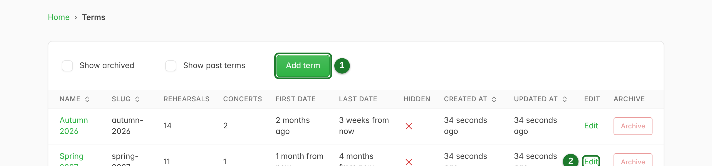
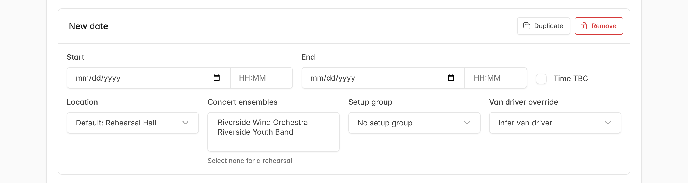
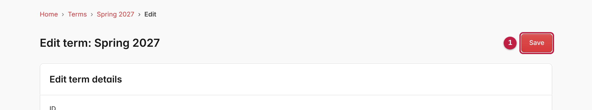
To remove a date, click Remove on it and save. Members are emailed if a date's setup group or van driver changes. Only an admin can archive a whole term.
11
Click your name at the top right to open your menu.
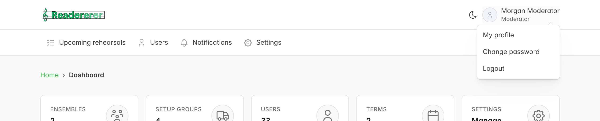
| I want to… | Go to |
|---|---|
| Add a new member | Users › Add user, then Edit › Add to ensemble |
| Change a member's email, setup group or ensemble | Users › the member › Edit |
| Remove a member who has left | Users › Archive on their row |
| Put in a reply for a member | Upcoming rehearsals › Poll › click their box › Save |
| See who changed a reply | The poll › the time next to their name |
| Take tonight's register | Upcoming rehearsals › Register › Fill from poll › Save register |
| See who is setting up or driving the van | Upcoming rehearsals › click the date |
| Check an email went out | Notifications |
| Add a term or a date | Terms › Add term, or Edit › Add date |
| Reset your password | Login page › I forgot password |